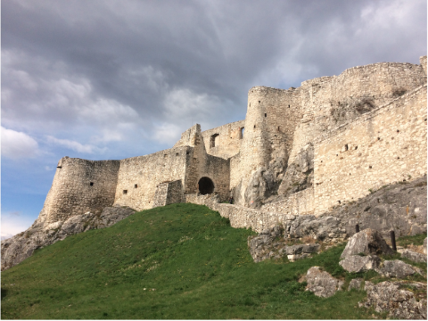
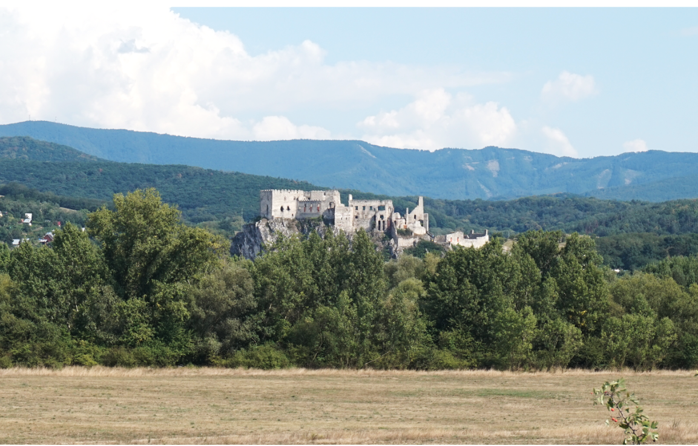
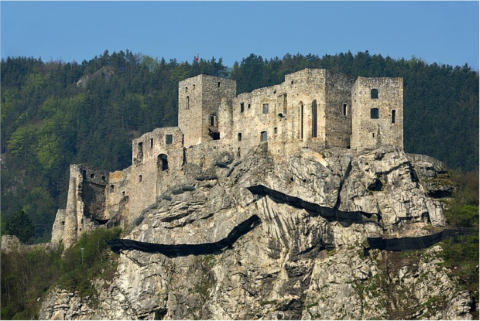

A slideshow kindly provided by Extreme Castle Hunters
For a country that has just celebrated its 28th birthday, Slovakia has an amazing number of medieval castles. Hardly ever the reign over a geographical area has changed so often - some of these castles have been located in 4 or even 5 different countries throughout centuries.
The castles come of course from the times when Hungary was reaching even beyond the today’s southern Polish border and the whole central Europe was arming itself against Mongolian invasions by building strongholds.
After the imperial union of Austria and Hungary, the major part of today’s Slovakia found itself under Austrian reign, which lasted till the foundation of Czechoslovakia in 1918. In 1993 as the result of the so called “Velvet Divorce” Slovakia and Czech Republic became two separate countries.
Stará Ľubovňa
Of all ‘Slovakian’ castles Stará Ľubovňa is the castle with the most frequent changes of “citizenship”. Erected by the Hungarian King Ondrej III in the 13th century, from the 15th century through most of its history the castle used to belong to Poland, as part of the so called Spis deposit - the area pledged by Hungary to Poland for a huge loan, which never was supposed to be returned. The debt was annulled in the 18th century when both Spis and southern Poland found themselves under the reign of Austria.
Stará Ľubovňa (2)
Stara Lubovna is a castle as it should be - located on a steep hill, offering scenic views in all directions, evidently defensive but also picturesque with its towers, corners and secret passages.
Oravský Hrad
Oravský Hrad is probably the most incredible of Slovakian castles - I remember my awe every time I saw it from the motorway, as a kid.
Oravský Hrad (2)
The sightseeing is possible only with a guide - but when entered, the castle is still as impressive as expected.
Oravský Hrad (3)
Due to its fantasy touch, Oravský Hrad castle was already twice used as the shooting location of Bram Stoker’s “Dracula’s” adaptations (1922 and 2020 ) and was also the inspiration for the looks of the Kaer Morhen fortress in the computer game “The Witcher”.
Spissky Hrad
Spissky Hrad is the flagship Slovakian castle, whose striking white ruins emerging on a grassy hill can be seen from miles away.

Spissky Hrad (2)
I have seen it first as a kid and must say, 20+ years later it is just as impressive.
Spissky Hrad (3)
Since 1993 a Unesco world’s heritage site, the ruins of Spissky Hrad, covering a surface of ca. 4ha, belong to the largest of their kind in Europe.

Beckov
Beckov is a ruined castle, majestically towering over a small charming village of the same name. It is said to be named after Becko, a favourite jester of the mighty castle’s ruler, Stibor of Clan Ostoja.
Beckov (2)
The dramatic, irregular shape of the castle ruin make it very photogenic.
Beckov (3)
The scenic neighbourhood around Beckov is perfect for a walk and the castle reveals very different looks depending on the viewing point.

Strečno
Strečno emerges on a steep rock over the valley of the river Vah - and, as often the case, is best to be admired from the other bank.
This slide's image is
'Strecno Castle' by 10ricardo on wikimedia commons (see source).
Licensed under CC BY-SA 4.0.
Strečno (2)
Climbing up the castle rock and the tower is rewarded by beautiful views.
Strecno (3)
The characteristic bridge to the castle was often to be seen in the fantasy production “Dragonheart”, where Strecno was starring as the main seat of King Einon.
Bojnice
In Bojnice you can feel like on Loire - this fairytale residence with its donjons and turrets was strongly modelled on French Renaissance castles.
Bojnice (2)
The romantic refurbishing was made around 1900 by family Pálffy, who has owned Bojnice for almost 300 years. 1939 they sold the castle to Jan Antonin Bata - the famous shoe manufacturer. After the war, as expected, the castle was confiscated by the state.
Bojnice (3)
Bojnice castle is in a perfect shape and its elaborate interiors can be visited.
Fiľakovo
Fiľakovo is a small village at today’s Slovakian-Hungarian border, heavily experienced by the 50 years of communism. The ruins of the massive medieval stronghold towering above remind of the region’s grander days.
Filakovo (2)
The ruins of Filakovo castle are being renovated and adapted for tourists. In the main tower, in the museum part, there is a surprisingly rich collection of archaeological artefacts on display - recommended!
Šomoška
Surrounded by woods and fields, the little, secluded Šomoška castle looks like Gargamel himself could live there, doesn’t it?
Šomoška (2)
Šomoška is probably one the most scurill geopolitical solutions to be found in Europe. The ruins are located just a few meters behind the Slovakian border, towering over the Hungarian village Somoskő. The castle’s official address is Šiatorská Bukovinka, which is a Slovakian settlement, a 40 min walk-through-woods away!